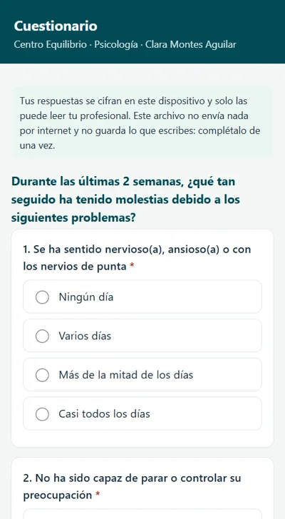
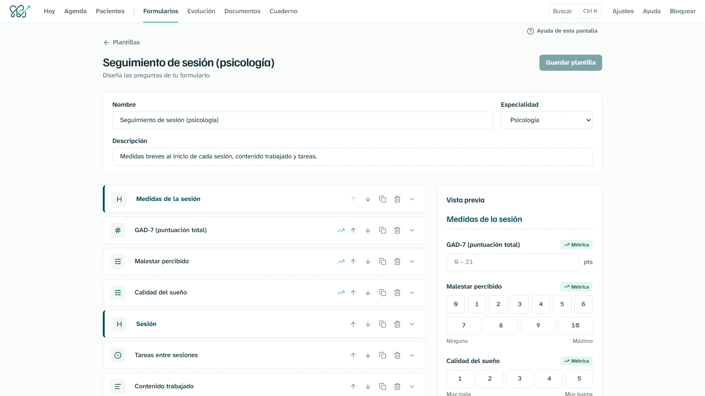

YKY › Tests en el móvil del paciente
Tests y cuestionarios en el móvil del paciente, sin apps ni fotos por WhatsApp
El paciente lo rellena en casa, a su ritmo. A ti te llega cifrado, con la puntuación hecha y guardado en su ficha.
Gratis por tiempo limitado Para psicólogas y psicólogos autónomos. Windows.
Cómo funciona
- En la ficha del paciente pulsas «Enviar para casa» y eliges el cuestionario.
- YKY crea un archivo que le mandas por WhatsApp o email. No lleva su nombre ni la puntuación del test.
- Lo abre en el navegador del móvil, sin instalar nada ni registrarse, y lo rellena.
- Obtiene un código cifrado que solo tu YKY puede abrir y te lo envía.
- Pulsas «Importar respuesta»: ves la puntuación y los avisos, y queda guardado en su ficha.

Qué tests incluye, y por qué solo esos
PHQ-9, GAD-7, PCL-5, PC-PTSD-5 y la escala de Rosenberg, con su corrección. Solo los que tienen permiso de uso comprobado: los tests con derechos de pago o sin permiso claro no están.
Los tests con preguntas delicadas avisan al importar y le muestran al paciente los teléfonos de ayuda (024 y 112). La puntuación es la del test; la interpretación es tuya.
Tus propios cuestionarios
Llevas años afinando tus preguntas. En YKY escribes tu formulario y lo ves al momento: preguntas que aparecen según la respuesta anterior, escalas, opciones, y puntuación con subescalas, ítems inversos y avisos.
Los números se convierten en una gráfica de evolución, que puedes meter en tus informes.

Preguntas
¿El paciente tiene que instalar algo?
No. Abre el archivo en el navegador del móvil o del ordenador y lo rellena. Funciona sin conexión.
¿Puede mandar varias respuestas con el mismo archivo?
Sí, por ejemplo una cada semana. Cuando ya no lo necesites, cierras el envío y ese archivo deja de valer.
¿Puedo añadir otros tests?
Puedes crear tus propios cuestionarios con puntuación. Si quieres usar un test publicado, comprueba antes que tienes permiso para hacerlo.
Míralo antes de decidir
En Instagram enseño YKY en vídeos cortos, con pantallas reales y pacientes inventados. Si te encaja, te lo enseño en 20 minutos por videollamada, solo lo que a ti te sirve.
Gratis por tiempo limitado Para Windows. Sin tarjeta ni permanencia.
Más para quien empieza por su cuenta
- Programa para psicólogos autónomosLo que necesita una consulta individual, sin lo que traen los programas para centros.
- Empezar tu consulta por tu cuentaUna lista práctica de lo que vas a tener que organizar, más allá de la terapia.
- Programa gratis para psicólogosQué incluye gratis, por qué es gratis y qué pasará después. Sin letra pequeña.
- Historia clínica de psicologíaNotas de sesión que se cierran de verdad, riesgo, objetivos y archivos, cifrados.
- Protección de datos para psicólogosQué te toca a ti, qué pone el programa y por qué tener las historias en tu ordenador.
- Agenda para psicólogosCitas, huecos libres, bonos de sesiones, cobros, recibos y recordatorios por WhatsApp.